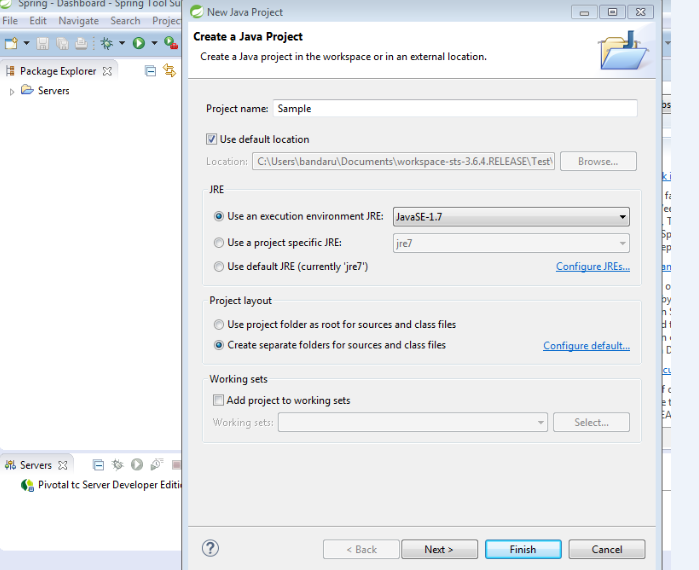

Let's Start a sample java program in STS
STS is an IDE like eclipse IDE, download STS from the link:https://spring.io/tools/sts
, then extract that zip file in your download locations, then go to the following locations as per screenshots and double click on that given leaf symbol.
Then give your own any workspace like below screen and click ok


Click on the red box to run or
Right click on your project Run As -> Java Application